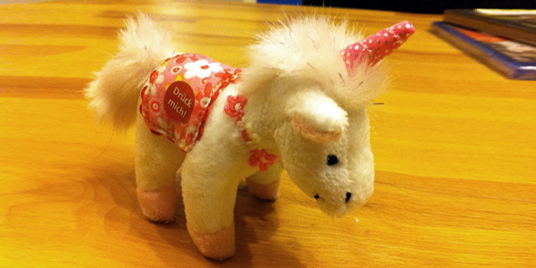

Preset - Slider
This demo shows how create a simple slider.
The auto-rotation stops while hovering and continues after the mouse leaves. Try swiping over the rondell if you are using a touch device.
Here's how it's done
<div id="rondellSlider">
<img src="images/slider/pic1.png" alt="unicorn" title="A beautiful unicorn">
<img src="images/slider/pic2.png" alt="swan" title="Swan on the alpsee">
<img src="images/slider/pic3.png" alt="landscape" title="Great landscape">
<img src="images/slider/pic4.png" alt="mountains" title="Austrian mountains">
</div>
<script type="text/javascript">
$(function() {
$('#rondellSlider').rondell({
preset: 'slider'
});
});
</script>